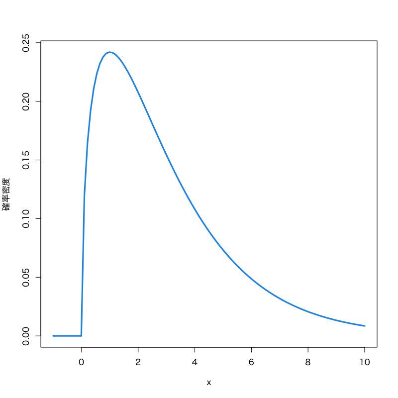

さまざまな検定
確率・統計 講義13
(Press ? for help, n and p for next and previous slide)
復習
統計的仮説検定
- ある現象・母集団に対して仮定された仮説の真偽を データに基づいて統計的に検証する方法
- 推定と大きく異なるのは， 母集団の分布に対して何らかの仮説を考えるところ
検定における仮説
帰無仮説 \(H_0\)
検定統計量の分布を予想するために立てる仮説
対立仮説 \(H_1\)
“帰無仮説が誤っているときに起こりうるシナリオ”として想定する仮説
検定の基本的手続き
- 仮説を立てる
- 仮説のもとで検定統計量が従う帰無分布を調べる
- 実際のデータから検定統計量の値を計算する
- 計算された検定統計量の値が 仮説が正しいときに十分高い確率で 得られるかどうかを判断する
検定の用語
- 仮説の判定
- 帰無仮説を棄却: 帰無仮説は誤っていると判断すること
- 帰無仮説を受容: 帰無仮説を積極的に棄却できないこと
- 検定の誤り
- 第一種過誤: “正しい帰無仮説を棄却する” 誤り
- 第二種過誤: “誤った帰無仮説を受容する” 誤り
- 検定の設計
- サイズ: “第一種過誤が起きる確率” を小さく
- 検出力: “第二種過誤が起きない確率” を大きく
有意水準と \(p\) 値
有意水準
第一種過誤が起きる確率(サイズ)として許容する上限
\(p\) 値 (有意確率): (検定統計量 \(T\), 棄却域 \(R_{\alpha}\))
検定統計量の値が棄却域に含まれる有意水準の最小値
\begin{equation} \text{($p$ 値)} =\min\{\alpha\in(0,1)|\text{$T$ が$R_{\alpha}$に含まれる}\} \end{equation}有意水準と \(p\) 値の関係
\(p\) 値が有意水準未満のときに帰無仮説を棄却する
正規分布を用いた平均値の検定
問題
確率変数列の平均値が \(\mu\) と等しいか検定せよ．
\begin{equation} X_1,X_2,\dotsc,X_n \end{equation}検定問題
\begin{equation} X_i=\theta+\varepsilon_{i}, \quad i=1,\dotsc,n \qquad \varepsilon_{i}\sim\mathcal{N}(0,\sigma^2) \end{equation}を観測値の確率モデル (\(\sigma^2\) は既知) とするとき
\begin{equation} H_{0}: \theta=\mu \quad\text{vs}\quad H_{1}: \theta\not=\mu \end{equation}
検定統計量
\begin{equation} T=\frac{\sqrt{n}(\bar{X}-\mu)}{\sigma} \end{equation}は 帰無仮説が正しいとき標準正規分布に従う．
棄却域 (両側検定の場合)
\begin{equation} R_{\alpha} = \left(-\infty,-z_{1{-}\alpha/2}\right) \cup \left(z_{1{-}\alpha/2},\infty\right) \end{equation}
正規分布を用いた平均値の差の検定
問題
2つの確率変数列の平均値が等しいか検定せよ．
\begin{equation} X_1,X_2,\dotsc,X_n, \qquad Y_1,Y_2,\dotsc,Y_m \end{equation}検定問題
\begin{align} X_i&=\theta_{1}+\varepsilon_{1i}, \quad i=1,\dotsc,n \qquad \varepsilon_{1i}\sim\mathcal{N}(0,\sigma^2)\\ Y_j&=\theta_{2}+\varepsilon_{2j}, \quad j=1,\dotsc,m \qquad \varepsilon_{2j}\sim\mathcal{N}(0,\sigma^2) \end{align}を観測値の確率モデル (\(\sigma^2\) は既知) とするとき
\begin{equation} H_{0}: \theta_{1}=\theta_{2} \quad\text{vs}\quad H_{1}: \theta_{1}\not=\theta_{2} \end{equation}
検定統計量
\begin{equation} T=\sqrt{\frac{nm}{n+m}}\frac{\bar{X}-\bar{Y}}{\sigma} \end{equation}は仮説が正しいとき標準正規分布に従う．
棄却域 (両側検定の場合)
\begin{equation} R_{\alpha} = \left(-\infty,-z_{1{-}\alpha/2}\right) \cup \left(z_{1{-}\alpha/2},\infty\right) \end{equation}
両側検定と片側検定
- 対立仮説によって棄却域の形は変わりうる
- 例: 2つの薬の治験結果に対する仮説:
- 古い薬(高価)と新しい薬(安価)の効能が変わらない
- 古い薬に比べて新しい薬の効能が改善した
- 例: 2つの薬の治験結果に対する仮説:
- 右片側検定: 棄却域がある定数 \(a\) によって \((a,\infty)\)
- 左片側検定: 棄却域がある定数 \(a\) によって \((-\infty,a)\)
- 右片側検定と左片側検定を合わせて片側検定と呼ぶ
- 両側検定: 棄却域がある定数 \(a < b\) によって \((-\infty,a)\cup(b,\infty)\)


演習
以下の問に答えよ．
Y県とF県で生産されたの桃の甘さの違いを調べるために， ある八百屋で売られているそれぞれの桃一山の糖度を調べたとする． 一つ一つの甘さはばらついているが， どちらの県でも分散 \(\sigma^{2}=0.6\) の正規分布に従うことが知られている． それぞれの標本平均を計算したところ
\begin{align} X_1,X_2,\dotsc,X_6 & \to \bar{X}=15.2\\ Y_1,Y_2,\dotsc,Y_{10} & \to \bar{Y}=14.5 \end{align}となった． 本来の平均値が等しいと言えるだろうか？
解答例
観測値の確率モデル
\begin{align} X_i&=\theta_{1}+\varepsilon_{1i}, \quad i=1,\dotsc,n \qquad \varepsilon_{1i}\sim\mathcal{N}(0,\sigma^2)\\ Y_j&=\theta_{2}+\varepsilon_{2j}, \quad j=1,\dotsc,m \qquad \varepsilon_{2j}\sim\mathcal{N}(0,\sigma^2) \end{align}- \(n=6\), \(m=10\), \(\sigma^{2}=0.6\)
検定統計量
\begin{equation} T=\sqrt{\frac{nm}{n+m}}\frac{\bar{X}-\bar{Y}}{\sigma} \end{equation}
棄却域 (例えば \(\alpha=0.05\) のとき \(z_{0.975}=1.96\))
\begin{equation} R_{\alpha} = \left(-\infty,-z_{1{-}\alpha/2}\right) \cup \left(z_{1{-}\alpha/2},\infty\right) \end{equation}検定統計量の計算
\begin{equation} T =\sqrt{\frac{6\times 10}{6+10}}\frac{15.2-14.5}{\sqrt{0.6}} =1.75 \end{equation}
- “Y県の方がF県より甘い” という対立仮説の場合
(右片側検定) 棄却域 (例えば \(\alpha=0.05\) のとき \(z_{0.95}=1.64\))
\begin{equation} R_{\alpha} = \left(z_{1{-}\alpha},\infty\right) \end{equation}
正規分布にもとづいたいろいろな検定
観測値の仮定
確率モデル
\begin{equation} X=\mu+\varepsilon, \qquad \varepsilon\sim\mathcal{N}(0,\sigma^2) \end{equation}\begin{equation} X\sim\mathcal{N}(\mu,\sigma^2) \end{equation}- \(\sigma^{2}\) が未知の場合を考える
平均の検定
問題
\(\mu_0\) を既知の定数として， 平均 \(\mu\) が真の平均 \(\mu_0\) であるか否かを検定する
\begin{equation} H_0:\mu=\mu_0\quad\text{vs}\quad H_1:\mu\neq\mu_0 \end{equation}
考え方
- 平均と分散の推定量の性質
標本平均: (正規分布に従う)
\begin{equation} \bar{X}=\frac{1}{n}\sum_{i=1}^nX_i \end{equation}不偏分散: (\(\chi^2\) 分布に従う)
\begin{equation} s^2=\frac{1}{n{-}1}\sum_{i=1}^n(X_i-\bar{X})^2 \end{equation}- 標本平均と不偏分散は互いに独立
\(\chi^{2}\) -分布

Figure 3: \(\chi^{2}\) -分布 (自由度\(3\))
- 見本空間: \([0,\infty)\)
- 母数: 自由度 \(\nu\)
密度関数:
\begin{multline} f(x)= \frac{1}{2^{\nu/2}\Gamma(\frac{\nu}{2})}x^{\nu/2-1}e^{-x/2}\\ \Gamma(z)=\int_0^\infty e^{-t}t^{z-1}dt \end{multline}
- 備考: \(\nu\) 個の標準正規分布の2乗和の分布で， 検定に利用される．
\(t\) -分布

Figure 4: \(t\) -分布 (自由度\(3\))
- 見本空間: \((-\infty,\infty)\)
- 母数: 自由度 \(\nu\)
密度関数:
\begin{equation} f(x)= \frac{\Gamma\left(\frac{\nu+1}{2}\right)} {\sqrt{\nu\pi}\;\Gamma\left(\frac{\nu}{2}\right)} \left(1+\frac{x^{2}}{\nu}\right)^{-\frac{1}{2}(\nu+1)} \end{equation}
- 備考: 標準正規分布と 自由度 \(\nu\) の \(\chi^{2}\) -分布の比の分布で， 検定に利用される．
Studentの \(t\) 検定
検定統計量
\begin{equation} T=\frac{\sqrt{n}(\bar{X}-\mu_0)}{s} \end{equation}- 帰無分布は自由度 \(n{-}1\) の \(t\) -分布
\(t_{1{-}\alpha/2}(n{-}1)\):
自由度 \(n{-}1\) の \(t\) 分布の \(1{-}\alpha/2\) 分位点
棄却域:
\begin{equation} R_{\alpha}= \left(-\infty,-t_{1{-}\alpha/2}(n{-}1)\right) \cup\left(t_{1{-}\alpha/2}(n{-}1),\infty\right) \end{equation}
平均の差の検定
問題
2種類のデータの平均が等しいか否かを検定する
\begin{equation} H_0:\mu_1=\mu_2\quad\text{vs}\quad H_1:\mu_1\neq\mu_2 \end{equation}- Behrens-Fisher 問題
- 正確かつ適切な検定を導出することは実は難しい
考え方
\(X_1,\dotsc,X_m\) および \(Y_1,\dotsc,Y_m\) の不偏分散:
\begin{equation} s_1^2=\frac{1}{m{-}1}\sum_{i=1}^m(X_i-\bar{X})^2,\quad s_2^2=\frac{1}{n{-}1}\sum_{i=1}^n(Y_i-\bar{Y})^2. \end{equation}- 標本平均と不偏分散の性質:
- \(\bar{X}-\bar{Y},s_1^2,s_2^2\) は互いに独立
- \((m{-}1)s_1^2/\sigma_1^2\) は自由度 \(m{-}1\) の \(\chi^2\) 分布に従う
- \((n{-}1)s_2^2/\sigma_2^2\) は自由度 \(n{-}1\) の \(\chi^2\) 分布に従う
Welchの \(t\) 検定
検定統計量
\begin{equation} T=\frac{\bar{X}-\bar{Y}}{\sqrt{s_1^2/m+s_2^2/n}} \end{equation}帰無分布は自由度 \(\hat{\nu}\) の \(t\) -分布 (Welchの近似)
\begin{equation} \hat{\nu} =\frac{(s_1^2/m+s_2^2/n)^2} {\frac{(s_1^2/m)^2}{m{-}1}+\frac{(s_2^2/n)^2}{n{-}1}} \end{equation}
\(t_{1{-}\alpha/2}(\hat{\nu})\):
自由度 \(\hat{\nu}\) の \(t\) 分布の \(1{-}\alpha/2\) 分位点
棄却域:
\begin{equation} R_{\alpha}= \left(-\infty,-t_{1{-}\alpha/2}(\hat{\nu})\right) \cup\left(t_{1{-}\alpha/2}(\hat{\nu}),\infty\right) \end{equation}
分散の検定
問題
\(\sigma_0^2\) を既知の定数として， 分散 \(\sigma^2\) が \(\sigma_0^2\) であるか否かを検定する
\begin{equation} H_0:\sigma^2=\sigma_0^2\quad\text{vs}\quad H_1:\sigma^2\neq\sigma_0^2 \end{equation}
考え方
- 分散の推定量の性質:
不偏分散: (\(\chi^2\) 分布に従う)
\begin{equation} s^2=\frac{1}{n{-}1}\sum_{i=1}^n(X_i-\bar{X})^2 \end{equation}
\(\chi^2\) 検定
検定統計量:
\begin{equation} \chi^2=\frac{(n{-}1)s^2}{\sigma_0^2} \end{equation}- 帰無分布は自由度 \(n{-}1\) の \(\chi^2\) 分布
\(\chi^2_{\alpha/2}(n{-}1)\), \(\chi^2_{1{-}\alpha/2}(n{-}1)\):
自由度 \(n{-}1\) の \(\chi^2\) 分布の \(\alpha/2\), \(1{-}\alpha/2\) 分位点
棄却域:
\begin{equation} R_{\alpha}= \left(0,\chi^2_{\alpha/2}(n{-}1)\right) \cup\left(\chi^2_{1{-}\alpha/2}(n{-}1),\infty\right) \end{equation}
分散の比の検定
問題
2種類のデータの分散が等しいか否かを検定する
\begin{equation} H_0:\sigma_1^2=\sigma_2^2\quad\text{vs}\quad H_1:\sigma_1^2\neq\sigma_2^2 \end{equation}
考え方
\(X_1,\dotsc,X_m\) および \(Y_1,\dotsc,Y_m\) の不偏分散:
\begin{equation} s_1^2=\frac{1}{m{-}1}\sum_{i=1}^m(X_i-\bar{X})^2,\quad s_2^2=\frac{1}{n{-}1}\sum_{i=1}^n(Y_i-\bar{Y})^2. \end{equation}- 分散の推定量の性質:
- \(s_1^2,s_2^2\) は互いに独立
- \((m{-}1)s_1^2/\sigma_1^2\) 自由度 \(m{-}1\) の \(\chi^2\) 分布に従う
- \((n{-}1)s_2^2/\sigma_2^2\) は自由度 \(n{-}1\) の \(\chi^2\) 分布に従う
\(F\) -分布

Figure 5: \(F\) -分布 (自由度\(5,10\))
- 見本空間: \([0,\infty)\)
- 母数: 自由度 \(\nu_{1},\nu_{2}\)
密度関数:
\begin{multline} f(x)= \frac{(\frac{\nu_{1}}{\nu_{2}})^{\frac{\nu_{1}}{2}}}{B(\frac{\nu_{1}}{2},\frac{\nu_{2}}{2})} \frac{x^{\frac{\nu_{1}}{2}-1}}{(1+\frac{\nu_{1}}{\nu_{2}}x)^{\frac{\nu_{1}+\nu_{2}}{2}}}\\ B(x,y)=\int_{0}^{1}t^{x-1}(1-t)^{y-1}dt \end{multline}
- 備考: \(\nu_{1},\nu_{2}\) 個の標準正規分布の2乗和の比の分布で， 検定に利用される．
\(F\) 検定
検定統計量:
\begin{equation} F=\frac{s_1^2}{s_2^2} \end{equation}- 帰無分布は自由度 \(m{-}1,n{-}1\) の \(F\) -分布
\(F_{\alpha/2}(m{-}1,n{-}1)\), \(F_{1{-}\alpha/2}(m{-}1,n{-}1)\):
自由度 \(m{-}1,n{-}1\) の \(F\) 分布の \(\alpha/2,\,1{-}\alpha/2\) 分位点
棄却域:
\begin{equation} R_{\alpha}= \left(0,F_{\alpha/2}(m{-}1,n{-}1)\right) \cup\left(F_{1{-}\alpha/2}(m{-}1,n{-}1),\infty\right) \end{equation}
漸近正規性にもとづく検定
推定量の漸近正規性
漸近正規性 (データ数が多いときの性質)
多くの推定量 \(\hat{\theta}\) の分布は正規分布で近似できる
- モーメントに基づく記述統計量は漸近正規性をもつ
- 最尤推定量は広い範囲の確率分布に対して漸近正規性をもつ
- いずれも中心極限定理にもとづく
- 信頼区間と同様に正規分布を用いて検定を考えることができる
最尤推定量の漸近正規性
定理
\(f(x)>0\) が連続で2階微分可能ならば \(\sqrt{n}(\hat\theta^*-\theta_0)\) は \(n\to\infty\) で正規分布 \(\mathcal{N}(0,I(\theta_0)^{-1})\) に近づく．
- 観測データが十分多ければ， 最尤推定量の誤差(分散)は Cramer-Rao 下界に一致する
Fisher 情報量 (\(f\) は確率質量関数または確率密度関数)
\begin{align} I(\theta_0) &=\mathbb{E}_{\theta_0} \left[ -\frac{\partial^2}{\partial\theta^2}\log f(X,\theta_0) \right] \\ &=\mathbb{E}_{\theta_0}\left[\left( \frac{\partial}{\partial\theta}\log f(X,\theta_0)\right)^2\right] \end{align}
最尤推定量の検定
問題
\(\theta_0\) を既知の定数として， 母数 \(\theta\) が真の値 \(\theta_0\) であるか否かを検定する
\begin{equation} H_0:\theta=\theta_0\quad\text{vs}\quad H_1:\theta\neq\theta_0 \end{equation}- 上記は両側検定
- 片側検定も同様に考えることができる
考え方
最尤の推定量の性質
観測データ数 \(n\) が十分大きいとき， 1次元母数 \(\theta\) を含む連続分布の最尤推定量 \(\hat\theta\) は
\begin{equation} \mathbb{E}[\hat\theta]=\theta_{0},\quad \mathrm{Var}(\hat\theta)=\frac{1}{nI(\theta_{0})} \end{equation}の正規分布で近似できる．
\(Z\) 検定 (正規分布による検定)
検定統計量
\begin{equation} Z=\sqrt{nI(\theta_{0})}(\hat{\theta}-\theta_{0}) \end{equation}- 帰無分布は標準正規分布
\(z_{1{-}\alpha/2}\):
標準正規分布の \(1{-}\alpha/2\) 分位点
棄却域:
\begin{equation} R_{\alpha}= \left(-\infty,-z_{1{-}\alpha/2}\right) \cup\left(z_{1{-}\alpha/2},\infty\right) \end{equation}
例題 (McNemar検定)
問題
A社とB社の開発した2つの文字認識機械がある． \(n\) 個の文字に対してその性能を調べたところ
1 2 3 … n A社 ○ ○ × … ○ 98.1% B社 × ○ ○ … ○ 98.0% のような正答率を示した． このときA社の機械はB社より優れていると言えるだろうか？
- 試験した結果によって判断は異なるべき
(n=10,000)
| Aが正解 | Aが誤り | |
|---|---|---|
| Bが正解 | 9800 | 0 |
| Bが誤り | 10 | 190 |
| Aが正解 | Aが誤り | |
|---|---|---|
| Bが正解 | 9610 | 190 |
| Bが誤り | 200 | 0 |
演習
以下の問に答えよ
A社とB社の開発した2つの文字認識機械がある． 10,000文字に対してその性能を調べたところ
Aが正解 Aが誤り Bが正解 9500 180 Bが誤り 220 100 のような正答率を示した． このときA社の機械はB社より優れていると言えるだろうか？
解答例
- 以下のように考える．
- 両者が正解: 簡単な文字 (比較しても意味がない)
- 両者が不正解: 難しい文字 (比較しても意味がない)
- どちらかが正解: 認識すべき文字 (比較すべき)
以下の確率変数を考える．
\begin{equation} X= \begin{cases} 1, &\text{A社のみ正解}\\ 0, &\text{B社のみ正解} \end{cases} \end{equation}
確率質量関数
A社のみ正解の確率を \(\theta\) とし， 確率変数 \(X\) の確率質量関数を以下で定義する．
\begin{equation} f(x)=\theta^{x}(1-\theta)^{1-x} \end{equation}Fisher 情報量
\begin{equation} I(\theta) =\mathbb{E} \left[ -\frac{\partial^{2}}{\partial\theta^{2}}\log f(X;\theta) \right] =\frac{1}{\theta(1-\theta)} \end{equation}
対数尤度
\begin{equation} \ell(\theta) =n\bar{X}\log\theta+n(1-\bar{X})\log(1-\theta) \end{equation}最尤推定量
\begin{align} \ell'(\hat\theta) &=\frac{n\bar{X}}{\hat\theta}-\frac{n(1-\bar{X})}{1-\hat\theta}=0\\ \hat\theta&=\bar{X} \end{align}
以下の検定を考える．
- 帰無仮説: A社とB社の性能に違いはない (\(\theta_{0}=0.5\))
- 対立仮説: A社の方がB社より性能が良い
\begin{equation} H_0:\theta=\theta_{0}\quad\text{vs}\quad H_1:\theta>\theta_{0} \end{equation}検定統計量
\begin{equation} Z=\sqrt{nI(\theta_{0})}(\hat{\theta}-\theta_{0}) \end{equation}- 帰無分布は標準正規分布
有意水準と棄却域(両側・片側)に応じて以下の分位点を用いれば良い
\begin{align} &\alpha=0.10 && z_{0.95}=1.64 && z_{0.90}=1.28 \\ &\alpha=0.05 && z_{0.975}=1.96 && z_{0.95}=1.64 \\ &\alpha=0.01 && z_{0.995}=2.58 && z_{0.99}=2.33 \end{align}検定統計量の計算
題意より
\begin{equation} Z=\sqrt{400/0.5^{2}}(220/400-0.5) \end{equation}
まとめ
- 分散未知の正規分布を用いた検定
- 平均値の検定
- 平均値の差の検定
- 分散の検定
- 分散の比の検定
- 最尤推定量を用いた検定
- 漸近正規性
- 正規分布を用いた検定に帰着
注意
- 確認テスト (講義13の中)
- 期間: 7/20講義終了-7/26 13:00
- 時間制限: 1時間
- 4問 (検定の計算問題，数値をよく確認すること)
- 試験の意味を考えて誠実な対応をすること
- ネットワーク環境等には自身で配慮すること